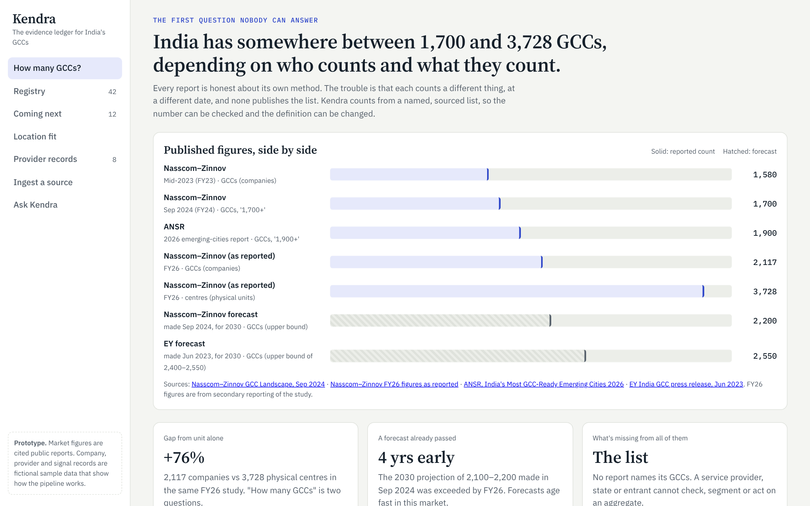
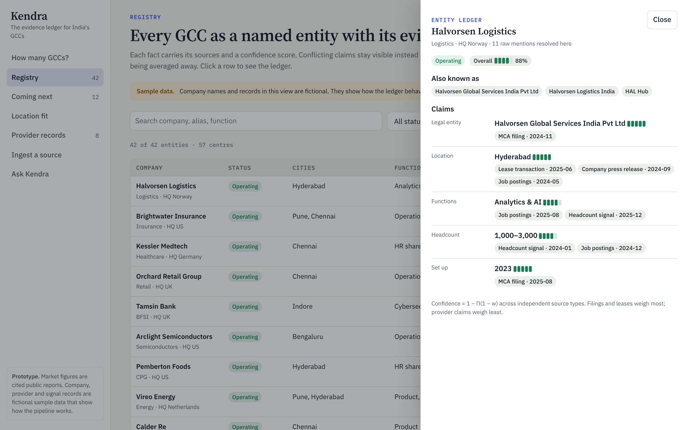
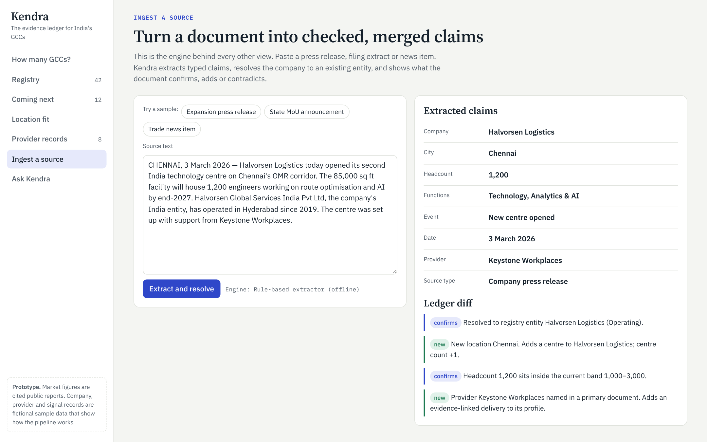

A proposal for India's GCC ecosystem · October 2026
The evidence ledger for India's Global Capability Centres. Every GCC named, every number with its source.
Problem · Opportunities · Solution · Positioning
+ working prototype
The answer on one page
PROBLEM
One study counts 2,117 GCCs and 3,728 centres. No report names them. Entrants, providers and states each pay a referral tax to learn what is true.
OPPORTUNITY
An entity-resolved, sourced registry of GCCs is the base layer. Signals, location intelligence and provider track records are all queries on it.
SOLUTION · POSITION
Build the ledger with AI ingestion. Sell signals to providers first; give entrants the truth free. Be the neutral record: no pay-to-rank.
The problem · context
2,117
GCCs in India, FY26
2.36M
professionals employed
$98.4B
revenue, up from $64.6B in FY24
45%
of India's office leasing, H1 2026
About 200 new GCCs a year. The 2030 forecast of 2,100–2,200 GCCs, made in September 2024, was passed in FY26. Annual reports cannot keep up with a market that moves this fast.
Sources: Nasscom–Zinnov GCC Landscape (Sep 2024; FY26 figures as reported, May 2026); ANAROCK via IANS, Jul 2026.
The problem · even the basics
| Source | Date | Figure | Counts |
|---|---|---|---|
| Nasscom–Zinnov | Mid-2023 | 1,580 | companies |
| Nasscom–Zinnov | Sep 2024 | 1,700+ | companies |
| ANSR | 2026 | 1,900+ | GCCs |
| Nasscom–Zinnov | FY26 | 2,117 | companies |
| Nasscom–Zinnov | FY26 | 3,728 | physical centres |
| EY (forecast) | for 2030 | 2,400–2,550 | GCCs |
+76%
Gap between companies and centres in the same study. "How many GCCs" is two different questions.
None of these reports publishes the list behind its number.
Sources: Nasscom–Zinnov (2023, Sep 2024, FY26 as reported); ANSR emerging-cities report 2026; EY press release, Jun 2023.
The problem · the players
See many mandates. Sell the study, so their view is the product.
See entity structures early. Bound by confidentiality.
See transfer pricing and real costs. Rarely shared.
See space requirements months ahead. Paid on the deal.
Makes a 5–10 year, multi-million dollar call once, with the least information of anyone.
See talent supply and pay. Paid per hire.
See early-stage teams before any filing. Want the transfer later.
See MoUs and incentive claims. Compete with every other state.
Publish aggregates. Don't publish the list.
The problem · who is hurt, how much
| Who | What they can't see | What it costs | What they do today |
|---|---|---|---|
| New entrant | Which city and which partners actually deliver | 6-month slip on 300 roles ≈ $3–4M of lost savings* | Referrals, one Big 4 study, broker tours |
| Service providers | Who is coming next, and when | Hear at the press release, after lease and hires are done | LinkedIn trawling, bought lists, events |
| State governments | Which companies to court; how they rank vs other states | Incentives aimed blind; no way to measure policy return | Consultant studies, roadshows, MoU counts |
| Operating GCCs | Peer benchmarks on cost, pay and scope | Mispriced talent; weak case for the next mandate | Paid surveys, peer WhatsApp groups |
*Illustrative: 300 roles × ~$25k annual saving per role versus home-country cost × 0.5 year. To be validated in interviews.
The problem · root cause
MCA filings, STPI and SEZ approvals, state MoUs, press, job posts, lease deals.
One GCC shows up under a legal entity, a brand, an acquired unit and a nickname.
A provider's "40+ GCCs set up" looks the same as a filed lease.
Annual reports, in a market adding about four GCCs a week.
The opportunities
| Opportunity | Who pays | Public data | Defensible | Call |
|---|---|---|---|---|
| GCC registry + intent signals | Providers, states | High | High | Build first |
| Location + incentive intelligence | States; free for entrants | Medium | Medium | Build first, as the free layer |
| Provider delivery records | Providers (profiles) | Low at start | Very high | Build second, on the registry |
| Talent and pay benchmarks | GCCs, HR | Low | Medium | Partner; crowded |
| Office space and clusters | Entrants, developers | Medium | Low | Ingest; brokers own it |
| Setup marketplace / RFPs | Providers | n/a | High once trusted | Later; needs trust first |
| Peer benchmarking club | GCC leaders | Contributed | High | Later |
The opportunities · what matters most
1
Location intelligence, provider records and signals are all queries on "which GCC, where, with whom". Without resolved entities, each is one more scattered dataset.
2
Thousands of providers need leads every month. About 200 entrants a year need the truth once. Recurring need pays the bills.
3
Every new document makes the next match cheaper and the confidence higher. A competitor who starts later starts with less evidence.
The solution
Every GCC named, with a count you can audit and re-define.
Who is about to enter or expand, scored from filings, hiring and space.
Cities ranked for a mandate, with state incentives and gaps shown.
Deliveries linked to named GCCs by evidence, kept apart from claims.
An AI analyst that calls the same tools as the products and answers only from the ledger, showing its trail.
Entities, aliases, claims, sources, confidence, history. Every product reads from here.
The solution · how the ledger is built
1 · COLLECT
MCA filings, STPI/SEZ, state MoUs, press, job posts, leases
2 · EXTRACT
LLM turns each document into typed claims with the quote
3 · RESOLVE
Names, brands, aliases merge; low-confidence goes to review
4 · SCORE
Confidence from independent source types and recency
5 · SERVE
Products and the analyst read the same ledger
Extraction from unstructured text, entity matching, signal detection in job posts, and the analyst agent that answers with tool calls.
Counts, confidence scores and rankings are plain formulas anyone can inspect. An LLM never invents a number that reaches a user.
The solution · for whom first
FIRST PAYING USER
FIRST TRUSTED AUDIENCE
The solution · sequence and model
| When | Ship | For | Revenue |
|---|---|---|---|
| 0–6 months | Ledger for the top six cities; free public GCC Index; Signals Pro | Providers | Team subscriptions |
| 6–18 months | Location fit and incentive navigator; state benchmark dashboards | Entrants, states | State contracts; entrants free |
| 18 months + | Provider delivery records; RFP routing; peer benchmarks | Everyone | Flat-fee verified profiles; disclosed referral fees |
Pricing is a hypothesis to test in the first 30 days: a Signals seat priced against one won mandate, which for a broker or recruiter is worth far more than a year's subscription.
No revenue line pays for position. Profiles are flat-fee and ranked by evidence only.
The positioning
For anyone making a decision about India's GCCs, Kendra is the evidence ledger that names every GCC and shows the source behind every number. Unlike consultant reports, it is a list you can check. Unlike brokers and advisors, it does not sell the answer it gives.
The positioning · why each stakeholder comes
| Stakeholder | Uses today | Why Kendra instead |
|---|---|---|
| Entrant | Referrals, one Big 4 study | A neutral shortlist of cities and partners, with evidence, in an afternoon, free |
| Provider | LinkedIn trawling, bought lists | Signals months before the press release, tied to the right legal entity |
| State government | Consultant studies, MoU counts | A live benchmark against other states and a list of companies to court |
| GCC leader | Paid surveys, peer chats | Peer benchmarks and a profile they can correct with evidence |
| Media, consultants | Their own surveys | A citable, open-method base to build on, so they can skip the counting |
The positioning · the moat
Providers can pay for a profile and data access. Never for a position.
Gaps are shown as gaps. Conflicting claims stay visible.
Corrections need evidence. The change log is public.
Definitions are switchable: companies or centres, with or without mid-market.
The prototype

Every published figure side by side, with unit and date.

Aliases, claims, sources and confidence; conflicts stay visible.

Document in; claims, entity match and ledger diff out.
Also: Registry · Coming next · Location fit · Provider records · Ask Kendra. Repo: gcc/index.html. Company records are fictional sample data.
What could break this
| Risk | How we'd test or contain it |
|---|---|
| Providers won't pay for signals | Hand-build 50 upcoming GCCs; sell 10 paid pilots to brokers and recruiters |
| Entity matching isn't accurate enough | Hand-label 500 filings and articles; publish only above 95% precision |
| Incumbents publish their lists | Their lists feed services they sell; neutrality and speed are hard for them to copy |
| Provider revenue erodes trust | Written charter, ranking separate from revenue, public change log |
| Data access limits | Official filings, state data and licensed feeds; no scraping behind logins |
How this was made
AI web research across Nasscom–Zinnov, EY, ANSR, ICRA, ANAROCK and state policy notes. Every figure in the deck kept with its source; conflicts kept, not smoothed.
Opportunities scored against four tests and argued both ways. The "data is unresolved, not missing" reframe came from noticing the 2,117 vs 3,728 gap.
Prototype built with Claude and run on Claude: extraction to typed claims, and a tool-using analyst. Deterministic maths wherever a number reaches a user.
Next
First step: a 30-day sprint. Hand-build the ledger for 50 upcoming GCCs, sell 10 provider pilots, and measure matching precision on 500 labelled records.
Kendra · deck and working prototype